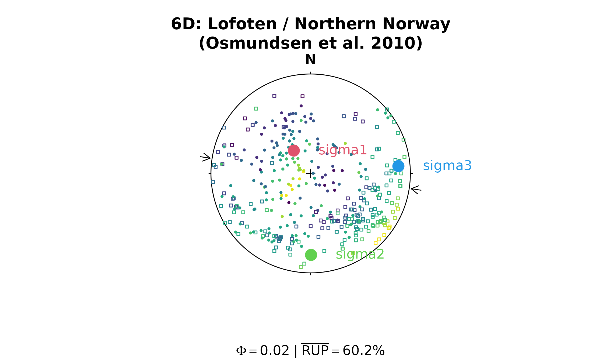
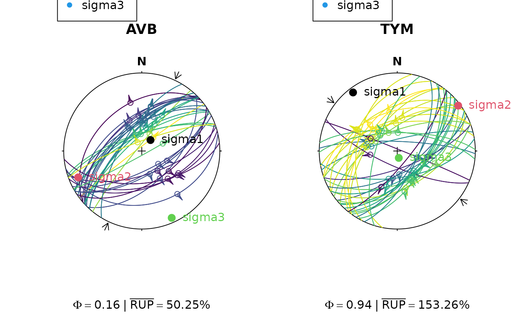

9D Direct Inversion for Fault Slip Including Vorticity
Source:R/stress_inversion_hansen.R
slip_inversion_hansen.RdDirect inversion of stress, strain or strain rate including vorticity using
9D parameter space using the method by Hansen (2013). It can be applied
regardless whether the dynamic or the kinematic hypothesis is adopted;
it can handle datasets representing two to seven degrees of freedom; and it
is not dependent on the correct assessment of slip sense.
If no vorticity is involved, the inversion can be done by using a 6-dimensional
parameter space only (type = '6d').
Usage
slip_inversion_hansen(x, flip = FALSE, friction = 0.6, type = c("9d", "6d"))Arguments
- x
object of class
"Pair"or"Fault"with at least 7 rows.- flip
logical. Flip if you want to have the negative stress tensor, i.e. sigma 1 and 3 will be flipped.
- friction
numeric. Coefficient of friction (0.6 by default)
- type
character. Inversion method, either
"9d"(the default) for using the 9-dimensional or"6d"for the 6-dimensional parameter space.
Value
list. See slip_inversion_michael() for output description.
If type == '9d, additional outputs are
the vorticity axis ("vorticity_axis", a Vec3 object) and the magnitude of
vorticity ("vorticity_mag", a numeric).
list
Details
Pole to the M-plane
$$\mathbf{b} = \mathbf{n} \times \mathbf{v}$$ where \(\mathbf{n}\) is the upward unit normal to the fault plane and \(\mathbf{v}\) is the unit slip vector.
9D f-poles
$$\mathbf{f}_{nr} = \left[ b_1 n_1, b_1 n_2, b_1 n_3, b_2 n_1, b_2 n_2, b_2 n_3, b_3 n_1, b_3 n_2, b_3 n_3\right]$$ $$\hat{\mathbf{f}} = \frac{\mathbf{f}_{nr}}{|\mathbf{f}_{nr}|}$$
Inverted slip tensor
The 9D stress vector \(\hat{s}\) is the eigenvector of \(\hat{M}\) corresponding to the second-lowest eigenvalue, reshaped into the asymmetric inverted slip tensor:
$$\hat{\dot{T}} = \begin{pmatrix} \hat{s}_1 & \hat{s}_2 & \hat{s}_3 \\ \hat{s}_4 & \hat{s}_5 & \hat{s}_6 \\ \hat{s}_7 & \hat{s}_8 & \hat{s}_9 \\ \end{pmatrix} $$
Symmetric and antisymmetric decomposition
$$\hat{\dot{T}}_S = \frac{\hat{\dot{T}} + \hat{\dot{T}}^{\top}}{2} $$
$$\hat{\dot{T}}_A = \frac{\hat{\dot{T}} - \hat{\dot{T}}^{\top}}{2} $$
Principal axes and shape ratio
Eigen-decompose \(\hat{\dot{T}}_S\), sort eigenvalues descending \(\lambda_1 \geq \lambda_2 \geq \lambda_3\). The eigenvectors give the principal stress axes \(\mathbf{s}_1\), \(\mathbf{s}_2\), \(\mathbf{s}_3\). The shape ratio is:
$$\phi = \frac{\lambda_2 - \lambda_3}{\lambda_1 - \lambda_3}$$
Reduced symmetric tensor
$$\mathbf{T}_2 = \mathbf{V} \begin{pmatrix} 1 & 0 & 0 \\ 0 & \phi & 0 \\ 0 & 0 & 0 \end{pmatrix} \mathbf{V}^{\top} $$ where \(\mathbf{V} = \left[\mathbf{s}_1\ \mathbf{s}_2\ \mathbf{s}_3\right]\) has the eigenvectors as columns.
Normalise the antisymmetric part
$$\hat{T}_A = \hat{\dot{T}}_A \odot \frac{\mathbf{T}_S}{\hat{\dot{T}}_S} $$
where \(\odot\) denotes element-wise multiplication and division.
Vorticity axis and magnitude
The axial vector \(\hat{T}_A\) is $$\overrightarrow{\omega} = \begin{pmatrix} \hat{T}_{A,32} \\ \hat{T}_{A,13} \\ \hat{T}_{A,21} \end{pmatrix} $$
The unit vorticity axis in geographic coordinates: $$\mathbf{u}_{xyz} = \frac{\overrightarrow{\omega}}{| \overrightarrow{\omega} |}$$
The vorticity magnitude: $$|\omega| = 2 | \overrightarrow{\omega} |$$
References
Hansen, J. A. (2013). Direct inversion of stress, strain or strain rate including vorticity: A linear method of homogenous fault-slip data inversion independent of adopted hypothesis. Journal of Structural Geology, 51, 3–13. https://doi.org/10.1016/j.jsg.2013.03.014
See also
Other stress-inversion:
Fault_PT(),
slip_inversion(),
slip_inversion_angelier(),
slip_inversion_hansen_boot(),
slip_inversion_michael(),
slip_inversion_simple()
Examples
# Osmundsen et al. 2010 dataset
## 9D solution
res <- slip_inversion_hansen(osmundsen2010, flip = TRUE)
phi_val <- round(res$stress_shape$phi, 2)
rup_val <- round(res$misfit$rup, 2)
w_val <- round(res$vorticity_mag, 2)
stereoplot(title = "9D: Lofoten / Northern Norway\n(Osmundsen et al. 2010)", guides = FALSE)
stereo_shmax(res$SHmax)
points(Plane(osmundsen2010), col = assign_col(res$misfit$rup), pch = 0, cex = 0.5)
points(Line(osmundsen2010), col = assign_col(res$misfit$rup), pch = 16, cex = 0.5)
points(res$principal_axes, col = 2:4, pch = 16, cex = 2)
text(res$principal_axes, labels = rownames(res$principal_axes), col = 2:4, adj = -.5)
points(res$vorticity_axis, col = 5, pch = 17, cex = 2)
text(res$vorticity_axis, labels = bquote(omega), col = 5, adj = -.5)
title(sub = bquote(Phi == .(phi_val) ~ "|" ~ bar("RUP") == .(rup_val) * "%" ~
"|" ~ omega == .(w_val)))
 ## 6D inversion
res6 <- slip_inversion_hansen(osmundsen2010, flip = TRUE, type = "6d")
phi6_val <- round(res6$stress_shape$phi, 2)
rup6_val <- round(res6$misfit$rup, 2)
stereoplot(title = "6D: Lofoten / Northern Norway\n(Osmundsen et al. 2010)", guides = FALSE)
stereo_shmax(res6$SHmax)
points(Plane(osmundsen2010), col = assign_col(res6$misfit$rup), pch = 0, cex = 0.5)
points(Line(osmundsen2010), col = assign_col(res6$misfit$rup), pch = 16, cex = 0.5)
points(res6$principal_axes, col = 2:4, pch = 16, cex = 2)
text(res6$principal_axes, labels = rownames(res6$principal_axes), col = 2:4, adj = -.5)
title(sub = bquote(Phi == .(phi6_val) ~ "|" ~ bar("RUP") == .(rup6_val) * "%"))
## 6D inversion
res6 <- slip_inversion_hansen(osmundsen2010, flip = TRUE, type = "6d")
phi6_val <- round(res6$stress_shape$phi, 2)
rup6_val <- round(res6$misfit$rup, 2)
stereoplot(title = "6D: Lofoten / Northern Norway\n(Osmundsen et al. 2010)", guides = FALSE)
stereo_shmax(res6$SHmax)
points(Plane(osmundsen2010), col = assign_col(res6$misfit$rup), pch = 0, cex = 0.5)
points(Line(osmundsen2010), col = assign_col(res6$misfit$rup), pch = 16, cex = 0.5)
points(res6$principal_axes, col = 2:4, pch = 16, cex = 2)
text(res6$principal_axes, labels = rownames(res6$principal_axes), col = 2:4, adj = -.5)
title(sub = bquote(Phi == .(phi6_val) ~ "|" ~ bar("RUP") == .(rup6_val) * "%"))

# Angelier 1990 dataset
nx <- length(angelier1990)
par(mfrow = c(1, nx))
invisible(lapply(seq_len(nx), function(i) {
# inversion
x <- angelier1990[[i]]
res <- slip_inversion_hansen(x, type = "6d")
# some stress shape
phi_val <- round(res$stress_shape$phi, 2)
# misfit
rup_val <- round(res$misfit$rup_mean, 2)
# Plot the faults (color-coded by RUP%) and show the principal stress axes
stereoplot(title = names(angelier1990)[i], guides = FALSE)
stereo_shmax(res$SHmax)
fault_plot(x, col = assign_col(res$misfit$rup))
points(res$principal_axes, col = 1:3, pch = 16, cex = 1.5)
text(res$principal_axes,
label = rownames(res$principal_axes),
col = 1:3, adj = -.25
)
legend("topleft", col = 2:4, legend = rownames(res$principal_axes), pch = 16)
title(sub = bquote(Phi == .(phi_val) ~ "|" ~ bar("RUP") == .(rup_val) * "%"))
}))
